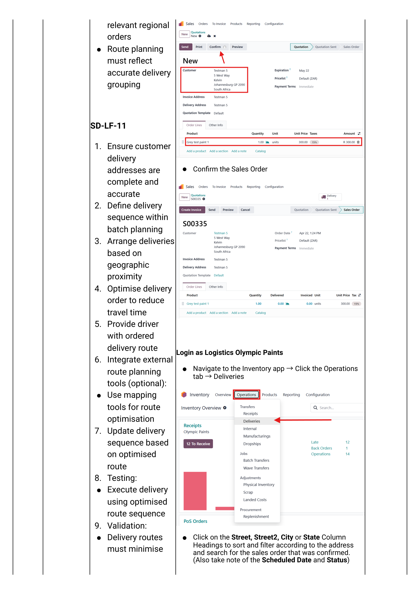
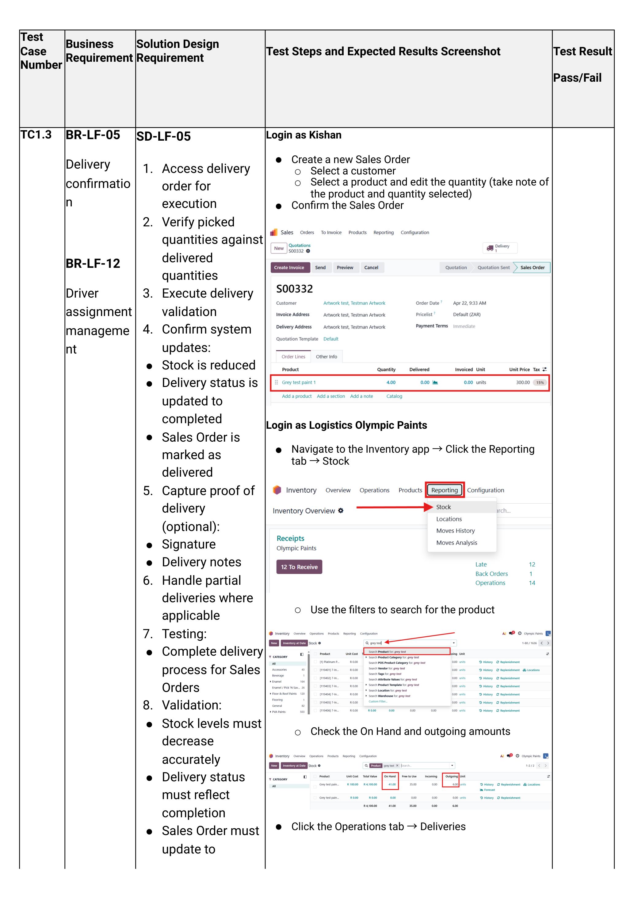
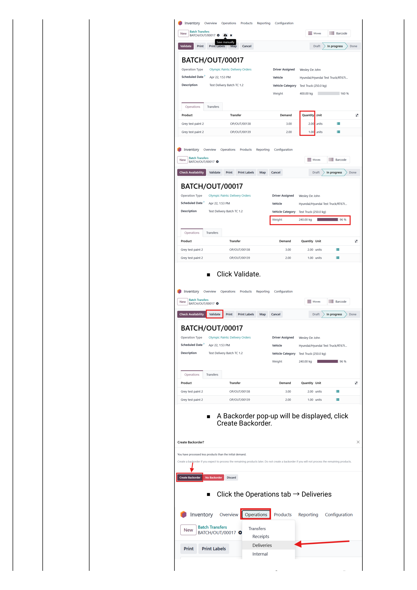

When to use this flow
Use Customer Collection when a customer is picking up their order from our premises in person — not waiting for a delivery vehicle. Common cases: contractor with own bakkie, urgent same-day pickups, smaller stockists collecting weekly orders.
How this differs from the standard delivery flow
| Step | Standard delivery | Customer collection |
|---|---|---|
| Sales order | Same — created and confirmed normally | Same — created and confirmed normally |
| Delivery routing | Added to a vehicle batch with driver, route, scheduled date | No batch. Stays as a standalone WH/OUT |
| Stock issued | By driver at customer's premises after route execution | At our counter when the customer arrives |
| Proof of delivery | Driver captures signature on the slip in transit | Customer signs the slip at the counter |
| Invoicing | Usually invoiced from office once driver returns | Often invoiced & paid on the spot at the counter |
All Phase 1 steps from Walkthrough 01 — Sales Order still apply: customer status checks, discount approval, credit limit, products and prices. The branching point is after the SO is confirmed — instead of pushing the delivery to a vehicle batch, you process it manually at the counter.
Take the Order
Create and confirm the sales order in the normal way, then flag it as a collection so the warehouse doesn't accidentally route it to a delivery batch.
Create the sales order
Follow Phase 1 of Walkthrough 01 — Sales Order:
- Login as salesperson or counter staff
- Sales app → New
- Select customer (Walk-in / Cash-Sale customers — see variation below)
- Add products & quantities
- Resolve any credit / discount approvals
- Click Confirm
The Sales Order is now created, and Odoo has auto-generated a delivery record WH/OUT/####.
Mark the delivery as a collection
This is what stops the warehouse from grouping the order into a vehicle batch tomorrow morning.
From the confirmed SO, click the Delivery smart button → on the WH/OUT record:
- Set the Scheduled Date to today (defaults to today, but verify).
- In the Note / chatter, log: "Customer collection — do not add to delivery batch".
- VERIFY: If our environment has a custom Delivery Method or Shipping Policy field with a Collection option, set it now. Sprint 5 does not document a dedicated collection flag — most South African Odoo deployments add a Carrier = "Customer Collection" option for filtering and reporting.
Walk this against your live Odoo. If there's a custom field that distinguishes collections from deliveries (Olympic Paints-specific), document the exact field name + value here and replace this placeholder.
Issue the Stock
When the customer arrives, find the delivery record, print the picking slip, hand the stock over with the slip signed, and validate the delivery.
Find & open the delivery
Login as Logistics Olympic Paints (or counter staff)
Navigate Inventory app → Operations tab → Deliveries.
- Use the search box — type the customer name, the SO reference, or the WH/OUT number.
- Filter by Ready status to see only those waiting to be issued.
- Click the row to open the delivery record.

Print the picking slip
Before issuing stock, print the picking slip so the warehouse can pick the right items and the customer has something to sign.
- On the open WH/OUT record click the ⚙ Action / Print menu (top toolbar).
- Choose Picking Operations (or the equivalent in our build) — Odoo generates a PDF showing: customer, address, every product line, quantity, and a signature line.
- Print 2 copies — one for the customer to sign at handover, one for our records.
The sprint docs reference "delivery notes" and "proof of delivery" but do not show the print menu. Confirm against your live system: which report templates exist (Picking Operations, Delivery Slip, Delivery Note) and which one Olympic Paints uses for counter handover. Replace with a screenshot of the Print menu and a sample of the printed slip.
Validate the delivery at the counter
The warehouse picks the stock, the customer counts it, signs both copies of the slip. Now mark the delivery done in Odoo:
- On the WH/OUT record, confirm each line's Done quantity equals what was physically handed over.
- (Optional) In the Note field type: "Collected by [name] — signed slip on file".
- Click Validate.

- Stock decreases in OP/Stock.
- The WH/OUT status flips to Done.
- The Sales Order is marked Delivered.
- The Create Invoice action becomes available.
Partial collection — creating a backorder
If the customer only takes part of the order (e.g. they ordered 10 × 20L drums but only have space for 6):
- Set the Done quantity on each line to what they actually take.
- Click Validate.
- Odoo prompts "Create Backorder?" — click Create Backorder.
- A second WH/OUT record is created with the remaining quantity in Ready status — waiting for their next visit.

Invoice & Collect Payment
Customer collections are usually invoiced and paid on the spot — especially for COD customers. The invoice can be created and printed in under a minute.
Create and print the invoice
Open the (now-Delivered) Sales Order — Sales app → Orders.
- Click Create Invoice.
- Choose Regular invoice → click Create and View Invoice.
- Review the draft invoice (tax, due date, totals).
- Click Confirm to post.
- Click Print → hand the printed invoice to the customer.
The sprint docs cover "View invoices via portal" but not the live Create Invoice popup. Capture this from the live system once.
Take payment at the counter
For Account customers paying later — skip this step; the invoice goes to their statement.
For COD / Cash customers paying now:
- On the posted invoice click Register Payment.
- Set the Journal to Petty Cash (cash) or Bank (card / EFT).
- Set Amount = invoice total (or partial if a deposit).
- Set Memo — receipt or card transaction reference.
- Click Create Payment.
The invoice flips to Paid and the customer's open balance drops accordingly.
COD customers — the safety gate
If the customer's status is COD (Cash On Delivery — set during onboarding), the system enforces payment before delivery can be validated.
The recommended counter sequence for COD collections:
- Confirm SO and create the draft invoice before validating the delivery.
- Take payment / register payment on the invoice.
- Only then validate the delivery and hand over the stock.
If you validate the delivery first, the COD customer has technically "received goods on credit" — which defeats the purpose of the COD flag. Always: Invoice → Payment → Validate Delivery → Hand over.
Edge cases
Two situations that come up at the counter and need their own handling.
Walk-in customer with no profile
If a customer arrives with no account on the system and wants to buy a small quantity for cash:
- If we have a generic "Cash Sale" / "Walk-in" customer profile: use that as the customer on the SO. Note the actual buyer's name in the SO Customer Reference field.
- If we don't: create a quick contact via Contacts → New, capture name + phone + ID number, save. Then create the SO normally.
- For one-off cash buys, the simplest path is the POS app at the till (Sprint 5 TC1.6) — that bypasses the SO/Delivery dance entirely. Use POS for cash counter sales under VERIFY: rand-threshold; use the SO flow for larger walk-in orders that need a formal invoice.
Confirm with management: (a) is there a standing "Cash Sale" customer? (b) what's the rand threshold above which a walk-in must get a real customer profile? Replace this callout with the agreed policy.
Customer collects part now, we deliver the rest
Useful when a contractor takes a few drums now and asks us to deliver the bulk later.
- Validate the counter portion as a partial delivery → Create Backorder (see Step 6).
- The backorder WH/OUT stays in Ready status.
- From here, follow Walkthrough 03 — Vehicle Scheduling to add the backorder to a delivery batch.
This is the cleanest path: each physical movement of stock has its own validated delivery record, so reporting (and audit) shows exactly when each portion left our premises.